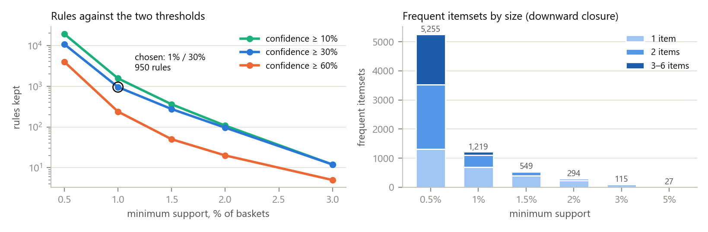
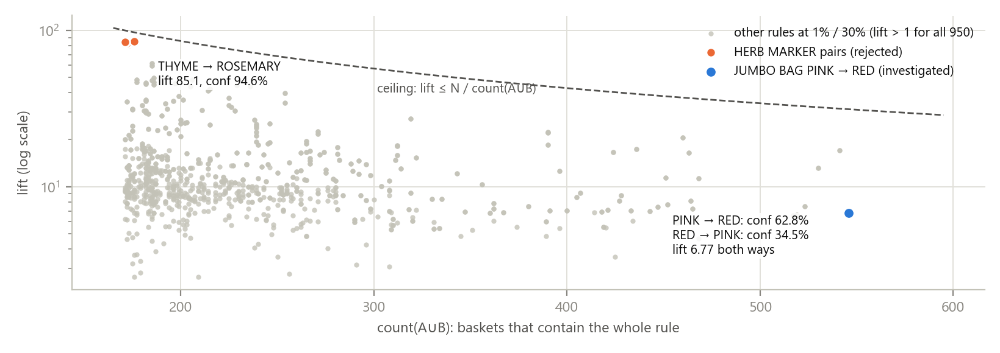
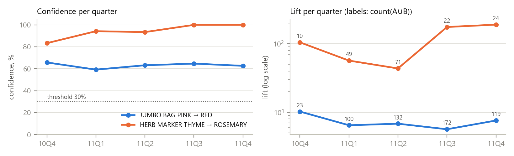
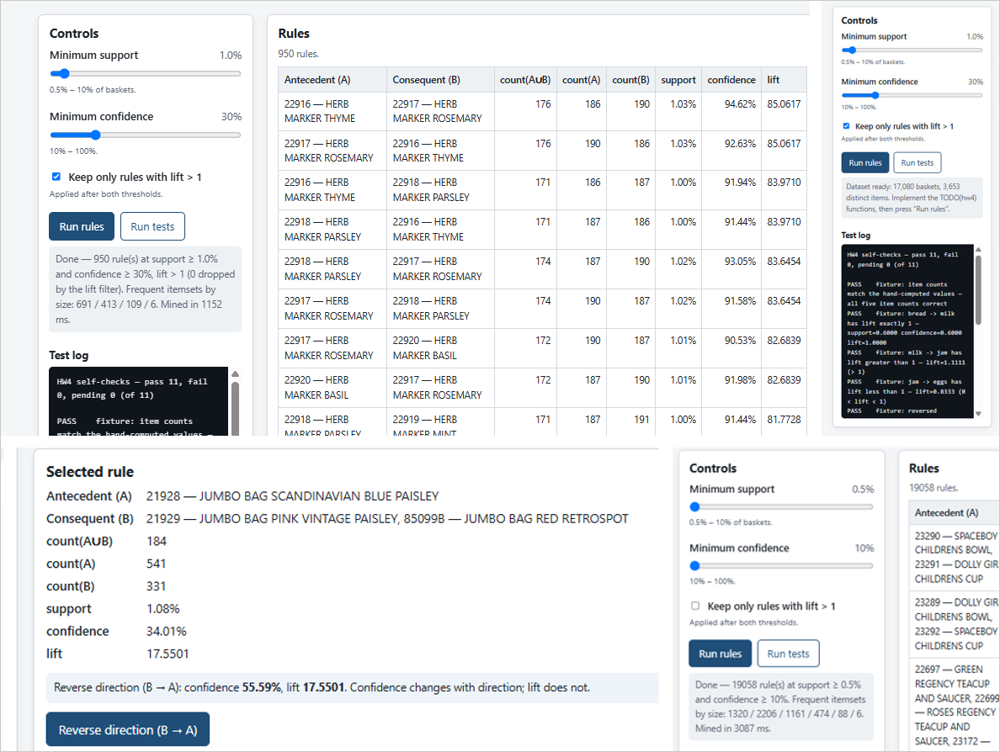

The Week 4 starter is a page with seven TODO stubs: basket deduplication, itemset counting, the three metrics, a frequent-itemset miner and the rule generator. I implemented them as Apriori with bitset counting, and checked every rule the page produces against an independent FP-Growth implementation at 24 threshold settings — identical counts, identical metrics. At the chosen thresholds (support 1%, confidence 30%) the page keeps 950 rules, every one with lift above 2.6: no single item reaches 12% of baskets, so any rule with confidence over 30% clears lift > 1 automatically, and that filter removes only 2 rules anywhere on the sliders. The rule at the top of the table is the one to reject: HERB MARKER THYME → ROSEMARY has lift 85 and confidence 95%, but it is one six-piece product line bought as a set, and its lift is 95% of the ceiling N/max(count) that any two rare items reach. The rule worth investigating is JUMBO BAG PINK POLKADOT → JUMBO BAG RED RETROSPOT: the most frequent pair in the data (546 baskets), confidence 62.8% one way and 34.5% the other. Because the cleaned baskets turned out to reproduce the raw UCI log exactly, every basket got its real date back, and the rules could be tested on a later period rather than argued about: 92% of the rules mined on Dec 2010–Aug 2011 keep confidence ≥ 30% in Sep–Dec 2011, but only 27.5% keep 1% support — and the herb-marker rule is one that does not.
Index Terms — association rules, Apriori, FP-Growth, support, confidence, lift, market basket analysis
Problem statement. The course provides a page and a cleaned export of the UCI Online Retail log
[1], [2]: 17,080 baskets (one per InvoiceNo) over 3,653 items (StockCode, labelled by
Description). The assignment asks to (i) build the invoice–item baskets, mine frequent itemsets with
Apriori or FP-Growth and generate rules with support, confidence and lift; (ii) state and justify the
thresholds and keep rules with lift > 1; and (iii) present one rule worth investigating and one to reject
with their counts, then discuss rule direction, the threshold trade-off, validation on a later period
and association versus causation.
Concrete example. Sorted by lift, the page's first two rows are HERB MARKER THYME → ROSEMARY and its reverse: lift 85.06, confidence 94.6% and 92.6%. A reading that trusts the sort order would put a cross-sell widget there. Yet 176 of the 186 baskets with thyme already contain rosemary, so the widget could change at most 10 baskets in a year. The pair with the most evidence, JUMBO BAG PINK → RED (546 baskets), sits 834th of 950 by lift (Fig. 2).
Contributions. (i) The seven stubs, with a miner that answers the default thresholds in 0.5–1.2 s in the browser. (ii) A browser test of 24 checks, including equality with mlxtend's FP-Growth [7] at every stored setting and with brute force on the five-basket fixture. (iii) An exact reproduction of the course's cleaning from the raw workbook, which turns the "no usable timestamps" limitation into a real out-of-time test. (iv) A citation correction: the starter attributes the dataset paper to the Journal of Cases on Information Technology; it was published in the Journal of Database Marketing & Customer Strategy Management [2].
Association rules and support/confidence come from Agrawal, Imieliński and Swami [3]; Apriori and its downward-closure pruning from Agrawal and Srikant [4]; FP-Growth, which mines without candidate generation, from Han, Pei and Yin [5]; lift (there called interest) from Brin et al. [6]. Tan, Kumar and Srivastava [8] compare interestingness measures and show that lift favours rare itemsets, which is exactly what Section 4 observes. The reference implementation is mlxtend 0.25 [7]; the dataset is the UCI Online Retail log [1] introduced by Chen, Sain and Guo [2]; the browser test uses Playwright [9].
Alternatives considered. FP-Growth in the page: the assignment allows either; Apriori with bitsets is shorter, its pruning step is the downward-closure argument the threshold question asks about, and FP-Growth is used where independence matters — as the reference. Conviction or leverage instead of lift: both are in [6], [8], but the assignment fixes the three metrics; the lift ceiling below is the reason one would want them.
Baskets and counting. dedupeBasket keeps the first occurrence of each stock code, so a basket is a set.
countItemset intersects the provided inverted index, walking the shortest posting list and probing the
rest. The metrics return {value, defined} and are undefined, never NaN or Infinity, on a zero
denominator; the detail panel then prints "undefined" next to the starter's inline note.
Miner. findFrequentItemsets is Apriori: level k+1 joins two k-itemsets that share their first k−1
items (the level is kept sorted, so these sit together), then drops any candidate with an infrequent
k-subset. Counting is vertical: each stock has a bitset of the baskets containing it, and a candidate's
count is the popcount of its two parents' AND — 534 words instead of a pass over 17,080 baskets. The
threshold is inclusive, count ≥ ⌈minSupport·N⌉, i.e. 171 baskets at 1%.
Rules. generateRules emits every split of every frequent itemset into non-empty A and B, so both
A → B and B → A are generated; count(A) and count(B) are looked up among the frequent itemsets, which
downward closure guarantees to contain them. Rules are sorted by lift, then confidence, then evidence. A
checkbox applies lift > 1 after both thresholds, and the status line reports the itemsets per size and
the mining time. The starter's comment that reversing a rule changes its support was corrected: support,
like lift, is symmetric.
Dates from the raw log. The export has no dates, and the README asks not to simulate them. Instead, I
re-applied the documented cleaning [README §3] to the raw workbook (sha256 matches the starter's) and
compared the result with transactions.js as a multiset of item sets: 17,080 baskets, zero
differences in either direction. Besides the obvious charge codes (POST, DOT, C2, M, BANK CHARGES, PADS), two
product-like codes had to be excluded by name: 23444 NEXT DAY CARRIAGE and 23574 PACKING CHARGE. Every basket thus regains its real InvoiceDate,
CustomerID and country, with no simulation involved; the page itself still uses only the export.
Tools. Vanilla JS, no build step; Python 3.12 with pandas 2.3, mlxtend 0.25 and Matplotlib 3.10 offline; Playwright 1.58 driving Google Chrome 154 headless; Claude Code (desktop app) with Claude Opus 5.5.
Setup. 17,080 baskets, median 16 distinct items (mean 22.5, max 540), from 4,229 customers, 90% in the UK — many of them wholesalers [1]. The most frequent item, 85123A WHITE HANGING HEART T-LIGHT HOLDER, is in 1,959 baskets (11.47%); 691 items reach 1% and 796 appear in fewer than 10 baskets.
Result 1 — thresholds, and why lift > 1 is nearly free here. Raising minimum support removes itemsets and, by downward closure, all their supersets with them: from 0.5% to 1% the frequent itemsets fall from 5,255 to 1,219 and the longest from 6 items to 4; at 2% only 51 pairs and one triple remain (Fig. 1). Confidence changes no itemset, it only discards splits. Since lift = confidence / support(B) and support(B) ≤ 11.47%, any rule with confidence ≥ 30% has lift ≥ 0.30/0.1147 = 2.62; the observed minimum is 2.64. Lift ≤ 1 is possible only below 11.47% confidence, and at the lowest slider setting (0.5%, 10%) exactly two of 19,058 rules have it: ALARM CLOCK BAKELIKE RED → WHITE HANGING HEART (confidence 11.2%, lift 0.974) and its green twin.
| min support → | 0.5% | 1% | 1.5% | 2% | 3% | 5% |
|---|---|---|---|---|---|---|
| Frequent itemsets (by size) | 5,255 (1,320/2,206/1,161/474/88/6) | 1,219 (691/413/109/6) | 549 | 294 | 115 | 27 |
| Rules, confidence ≥ 10% | 19,058 | 1,555 | 360 | 108 | 12 | 0 |
| Rules, confidence ≥ 30% | 10,723 | 950 | 275 | 96 | 12 | 0 |
| Rules, confidence ≥ 60% | 3,958 | 238 | 50 | 20 | 5 | 0 |
| Page mining time (Chrome) | 1.9–3.1 s | 0.5–1.2 s | — | 0.08 s | 0.04 s | — |
Chosen thresholds: support 1%, confidence 30%. At 1% every rule rests on at least 171 baskets, so a confidence near 50% has a binomial standard error of at most 3.8 points; at 0.5% (86 baskets) the table grows elevenfold, mostly into 3–6-item recombinations of the same colour ranges, which no merchandiser will read. At 2% only 96 rules survive, and rules on products launched in mid-2011 drop out because their annual support is diluted by the months before they existed — SET OF 3 REGENCY CAKE TINS (first sold 8 June 2011) → REGENCY CAKESTAND 3 TIER has 250 baskets, 1.46%. A 30% attach rate is a level worth a recommendation slot, and it is above the largest item support, so the lift > 1 requirement holds by construction (0 rules dropped).

Fig. 1. Left: rules kept against both thresholds (log scale). Right: frequent itemsets by size — each step up in support removes whole branches of supersets.
Result 2 — the rule to investigate and the rule to reject.
| JUMBO BAG PINK POLKADOT → JUMBO BAG RED RETROSPOT | HERB MARKER THYME → HERB MARKER ROSEMARY | |
|---|---|---|
| count(A∪B) / count(A) / count(B) | 546 / 869 / 1,584 | 176 / 186 / 190 |
| support, confidence, lift | 3.20%, 62.83%, 6.77 | 1.03%, 94.62%, 85.06 |
| reverse confidence (B → A) | 34.47% | 92.63% |
| lift ceiling N / max(count A, count B) | 10.78 | 89.89 (lift is 95% of it) |
| baskets with A but not B — the room a cross-sell has | 323 | 10 |
| customers behind the joint baskets; largest one's share | 255; 14 baskets (2.6%) | 125; 8 baskets (4.5%) |
| Dec 2010–Aug 2011 → Sep–Dec 2011: support | 3.50% → 2.71% | 1.39% → 0.45% |
| same periods: confidence; lift | 63.5% → 61.5%; 6.71 → 6.86 | 93.6% → 100%; 62.1 → 206.2 |
Hand calculation for the first rule, from the counts: support = 546/17,080 = 0.03197; confidence =
546/869 = 0.62831; lift = 0.62831 / (1,584/17,080) = 0.62831/0.09274 = 6.7749 — the page shows 3.20%,
62.83% and 6.7749, and counting distinct InvoiceNo directly in the raw workbook rows gives the same 869,
1,584 and 546.
Why investigate the jumbo bags. It is the best-evidenced rule in the table, its customers are spread out, its confidence stays between 59% and 66% in every one of the five quarters while lift stays between 5.6 and 10.2 (Fig. 3), and 323 baskets in the log carry the pink bag without the red one. Why reject the herb markers. Six HERB MARKER codes (thyme, rosemary, parsley, basil, mint, chives) occupy the 12 top rows of the table; 162 of the 219 baskets with any of them contain at least five. That is a product sold as a set, not an association to exploit. Its lift is large because both items are rare: lift ≤ N/max(count(A), count(B)) whenever the joint count is at most the smaller count, so two items bought only together in 190 baskets score ~90 however unremarkable the pairing. In the later period it falls to 30 baskets, below the support threshold, while its lift triples — the metric is reacting to its own denominator.

Fig. 2. All 950 rules at 1% / 30%. The dashed line is the ceiling N / count(A∪B) that lift cannot exceed; the herb-marker pairs sit just under it because they are rare and always bought together.
Result 3 — what survives a later period. Mining Dec 2010–Aug 2011 (10,481 baskets) at 1% / 30% gives 1,845 rules. Re-measured on Sep–Dec 2011 (6,599 baskets), all 1,845 (100%) still have lift > 1 and 1,698 (92.0%) still confidence ≥ 30%, with a median change of −1.8 points; but only 508 (27.5%) keep support ≥ 1% and 467 (25.3%) pass both thresholds again, while 878 rules of the later period come from itemsets that were not frequent before. Confidence and lift transfer; support does not. The assortment turns over in autumn: PAPER CHAIN KIT 50'S CHRISTMAS ↔ VINTAGE CHRISTMAS (366 baskets in Sep–Dec, 85 before), WOODEN HEART ↔ STAR CHRISTMAS SCANDINAVIAN (306 against 13). Even within the full-year table, 15 of the 438 itemsets behind the 950 rules — hand warmers, hot water bottles — have 90% or more of their baskets in a period holding 38.6% of all baskets. A rule mined over a year is partly a statement about Q4.

Fig. 3. The two rules by quarter. Confidence of the jumbo-bag rule is flat; the herb-marker lift swings between 44 and 191 on 10–71 baskets.
Verification. tests/check_rules.py runs 24 browser checks, all passing: the page's rule tables equal
mlxtend FP-Growth at five stored settings (up to 19,058 rules, identical counts, metric difference 0.0) and
in rule count at all 24 settings of the sweep; the fixture matches brute force at nine threshold pairs;
the UI lists 950 rules with the reference's first row; the detail and Reverse paths show 62.83% / 34.47% at
the same lift; a rule with count(A) = 0 shows "undefined"; the lift filter drops exactly 2 rules at 0.5% / 10%;
and the page passes 11/11 from file://. The untouched starter reports 2 passed / 9 pending, as its README says.
A → B says pink baskets contain red more often than baskets in general;
it does not say that showing pink sells red. A plausible common cause here is the buyer: a gift shop
stocking the polka-dot and retrospot range orders both because it decided to carry the range, and would
have ordered the red bag with or without a prompt — 62.8% of pink baskets already do. Site layout (both
bags listed on one page) and seasonal promotions would produce the same lift with zero incremental effect.What surprised me. That the required lift > 1 filter does nothing above 11.47% confidence, and that the most impressive-looking rule is impressive for an arithmetic reason. Next improvement. Rank by the minimum lift across periods instead of the pooled lift, and report conviction, which rarity does not cap.
AI tools used. Claude Code (desktop app, Code tab), model Claude Opus 5.5, one session.
How AI was used. Search / reading: cloning [10] and reading week4/; the UCI page [1] and the
publisher's page of [2], where the starter's citation error was found. Code generation: the seven stubs and
the small UI additions in script.js, index.html, style.css; experiments/; tests/check_rules.py.
Analysis: running the sweep, the raw-log reproduction and the temporal split, choosing the two rules, and
drafting this report.
What I personally verified. Screenshots are in manual/ (Fig. 4). The summary reads 17,080 baskets and 3,653 items; Run tests reports 11 passed, 0 failed, 0 pending;
Run rules at 1% / 30% lists 950 rules, 0 dropped by the lift filter, itemsets 691 / 413 / 109 / 6, with the
herb-marker rules on top exactly as in Section 4. Searching the table for "JUMBO BAG PINK" first found a
different rule than the one analysed above: 21928 JUMBO BAG SCANDINAVIAN BLUE PAISLEY → {21929 JUMBO BAG
PINK VINTAGE PAISLEY, 85099B JUMBO BAG RED RETROSPOT}, 184 / 541 / 331, confidence 34.01%; Reverse gave
55.59% at the same lift 17.5501. The asymmetry was thus checked by hand on this rule, and the
546 / 869 / 1,584 rule by the browser test. At 0.5% / 10% without the lift filter the page
listed 19,058 rules. Mining took 1,152 ms and 3,087 ms on my machine against 0.5 s and 1.9 s headless, hence
the ranges in the threshold table. I also opened and ran the starter.

Fig. 4. The checks by hand. Top: 950 rules at 1% / 30% and the self-check log (11 / 0 / 0). Bottom: a jumbo-bag rule and its reverse direction (34.01% vs 55.59%, lift 17.5501), and 19,058 rules at 0.5% / 10% with the lift filter off.
What I trusted without verification. That the course's transactions.js is the dataset the page should
use (it matches the raw log, so this is low-risk); that InvoiceDate reflects when the order was placed; the
sample-size formula for two proportions used in the validation plan.
Session log. kosychev_a04_session.json is the unmodified Claude Code log of this work.
[1] D. Chen, "Online Retail," UCI Machine Learning Repository, dataset 352, 2015, doi: 10.24432/C5BW33. [Online]. Available: https://archive.ics.uci.edu/dataset/352/online+retail. [Accessed: 2026-10-08].
[2] D. Chen, S. L. Sain, and K. Guo, "Data mining for the online retail industry: A case study of RFM model-based customer segmentation using data mining," J. Database Marketing & Customer Strategy Management, vol. 19, no. 3, pp. 197–208, 2012, doi: 10.1057/dbm.2012.17.
[3] R. Agrawal, T. Imieliński, and A. Swami, "Mining association rules between sets of items in large databases," in Proc. ACM SIGMOD Int. Conf. Management of Data, 1993, pp. 207–216.
[4] R. Agrawal and R. Srikant, "Fast algorithms for mining association rules," in Proc. 20th Int. Conf. Very Large Data Bases (VLDB), 1994, pp. 487–499.
[5] J. Han, J. Pei, and Y. Yin, "Mining frequent patterns without candidate generation," in Proc. ACM SIGMOD Int. Conf. Management of Data, 2000, pp. 1–12.
[6] S. Brin, R. Motwani, J. D. Ullman, and S. Tsur, "Dynamic itemset counting and implication rules for market basket data," in Proc. ACM SIGMOD Int. Conf. Management of Data, 1997, pp. 255–264.
[7] S. Raschka, "MLxtend: Providing machine learning and data science utilities and extensions to Python's scientific computing stack," J. Open Source Software, vol. 3, no. 24, p. 638, 2018.
[8] P.-N. Tan, V. Kumar, and J. Srivastava, "Selecting the right interestingness measure for association patterns," in Proc. 8th ACM SIGKDD Int. Conf. Knowledge Discovery and Data Mining, 2002, pp. 32–41.
[9] Microsoft, "Playwright for Python — Installation," Playwright Docs. [Online]. Available: https://playwright.dev/python/docs/intro. [Accessed: 2026-10-08].
[10] S. Jin, "RecSys-LLMs: Recommender Systems course repository (week4)," GitHub, commit c00cfa1, 2026. [Online]. Available: https://github.com/dryjins/RecSys-LLMs/tree/main/week4. [Accessed: 2026-10-08].